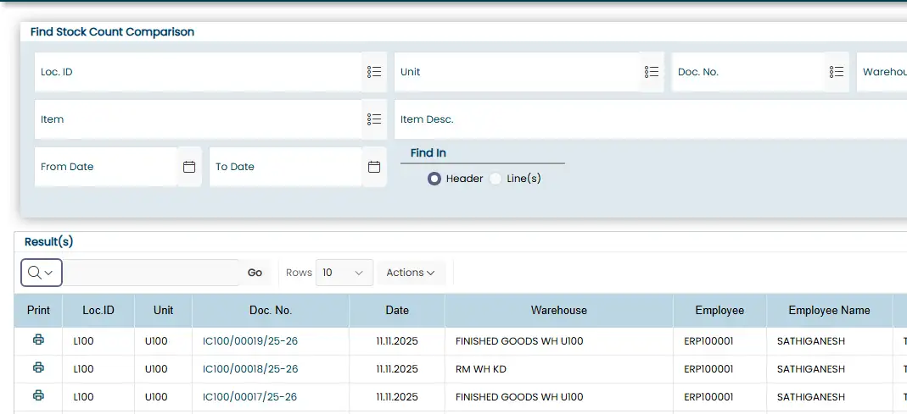
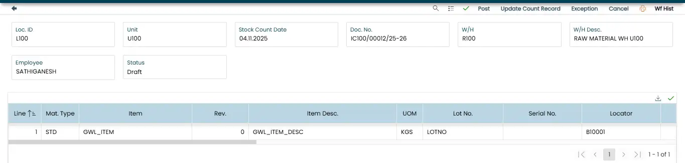

<div data-category="Inventory Control" data-title="Stock Count Comparison" data-updated="January 27, 2026" data-contributors="RoadmapIT" data-breadcrumb="Home,Inventory Control,Stock Count Comparison">
  <div class="page-content">
    <p>Stock count comparison in inventory refers to the process of comparing the physical count of items in stock with the recorded quantities in an inventory management system. This comparison helps identify discrepancies between the actual stock and the recorded stock, ensuring inventory accuracy</p>
    <h5>Navigation path:</h5>
    <p class="fs-6">Supply Chain Management \ Inventory \ Transaction \ Stock Count Comparison</p>
    
    <ul style="list-style-type: none; align-content: center">
      <li class="mouse-icon">This screen displays all the comparison records with its status, select the corresponding document.</li>
    </ul>
    
    <ul style="list-style-type: none; align-content: center">
      <li class="mouse-icon">This screen is used to create Physical count to compare with system count</li>
      <li class="mouse-icon">Click “Update Count Record” to update System count and Physical count.</li>
      <li class="mouse-icon">Click “Lot / Serial” to view lot serial detail.</li>
      <li class="mouse-icon">Click “Finalize Count Comparison” to update the Physical value as Stocks Value.</li>
      <li class="mouse-icon">The exception can be viewed from the Exception dialog.</li>
      <li class="mouse-icon">
        Click
        <i class="bi bi-check-lg fs-4 mx-1 text-success"></i>
        button to save the document
      </li>
    </ul>
  </div>
</div>
